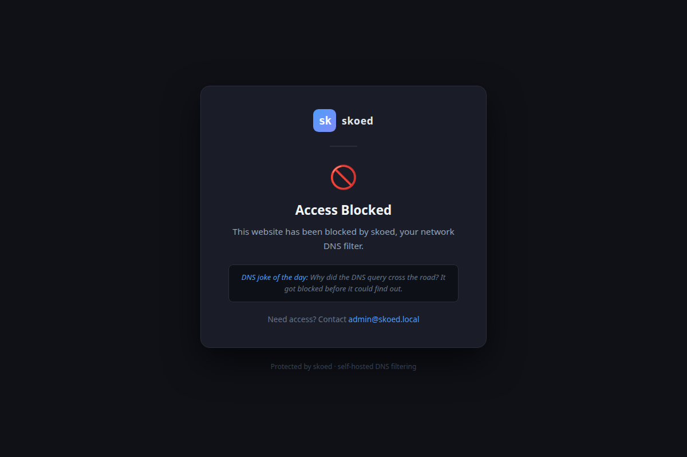

Acceptance test report · 2026-06-23 · branch feature/m26-custom-block-page

10.0.0.100; browser is redirected to this page.| Test | FSID | Status | Time |
|---|---|---|---|
| TestBlockPageRedirectReturnsIP | FS-BlockPageRedirectReturnsIP |
PASS | ~2.0s |
| TestBlockPageRedirectServfailAAAA | FS-BlockPageRedirectServfailAAAA |
PASS | ~1.9s |
| TestBlockPageNonRedirectUnaffected | FS-BlockPageNonRedirectUnaffected |
PASS | ~2.0s |
| TestBlockPageHttpServerResponds | FS-BlockPageHttpServerResponds |
PASS | ~1.6s |
| TestBlockPageConfigGet | FS-BlockPageConfigGet |
PASS | ~2.1s |
| TestBlockPageConfigPersisted | FS-BlockPageConfigPatch |
PASS | ~2.7s |
| TestBlockPageTitleInResponse | FS-BlockPageTitleInResponse |
PASS | ~2.5s |
| Area | Covered by |
|---|---|
| DNS: A query → block page IP (redirect policy) | TestBlockPageRedirectReturnsIP |
| DNS: AAAA query → SERVFAIL (redirect policy) | TestBlockPageRedirectServfailAAAA |
| DNS: nxdomain policy unaffected by block page config | TestBlockPageNonRedirectUnaffected |
| HTTP server: 200 HTML response on GET / | TestBlockPageHttpServerResponds |
| API: GET /api/v1/blockpage returns IP + port | TestBlockPageConfigGet |
| API: PATCH /api/v1/blockpage → Raft-replicated, survives restart | TestBlockPageConfigPersisted |
| HTTP content: custom title reflected in HTML body | TestBlockPageTitleInResponse |